MIPI D-PHY
Feature:
Supported Models:
| BF6264B | BF7264B | BF7264B+ | BF7264 Pro |
|---|---|---|---|
| ● | ● | ● |
BF7264B/B+/Pro has two USB holes at the front.
The host keeps all the functions of its predecessor, the BF6264B, and adds the MIPI D-PHY analyzer function.
Specifications:
- BF7264B/B+/Pro, 32Gb RAM, MIPI D-PHY probes
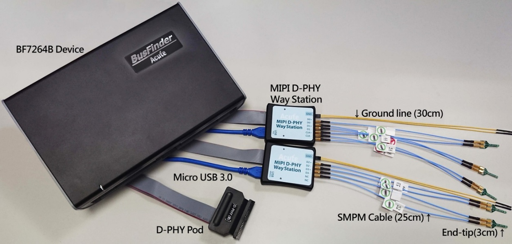
- supports D-PHY V1.2 Up to 2.0Gbps per lane, 1 + 4 Lanes

- CSI-2 1.3 or DSI 1.3 protocol packets displayed as below with the DSI DCS 1.3 commands

- Use 32Gb RAM as the buffer to stream all D-PHY data into the SSD HD in order to record all data flow from Low Power Mode to High Speed Mode
- Recordable data without streaming into the SSD HD:
| Resolutions | Recordable frames | Note |
|---|---|---|
| 1K (FHD 1080x1920) | ~500 | |
| 2K (WQHD 1440x2560) | ~280 | |
| 4K (UHD 2160x3840) | ~120 | 8 lanes or 4 lanes with DSC compression |
| 8K (4320x8192) | Not available | Not available |
- “Data Filter” filters unwanted video data to save memory
- “Search” searches specific data
- “ECC/CRC Packet” displays and counts ECC and CRC
- Display DSI(CSI) image data including RGB, YCbCr, RAW format or compressed DSC packets, and count the Porch from raw data. For more information, please refer to Appendix 2.
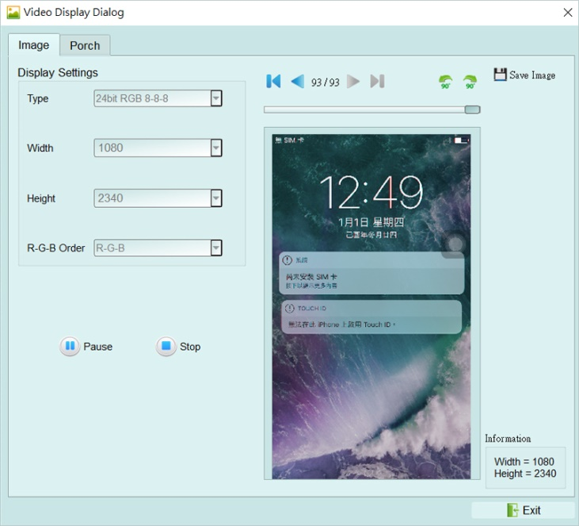

- D-PHY command statistics include numbers of packets, individual command, different data length, and errors

- D-PHY command trigger
- Trigger parameters include commands and 32 bytes data in order to cover all short packets and most of non-video long packets.
-
Short Packet: 4-bytes Header Long Packet: 4-bytes Header + 28-bytes Data
- CRC/ECC error trigger
- The Trigger-Out port is to trigger a DSO to capture waveforms
- TE channel detect (Tearing Effect)

- Detect the TE signal from the screen. Must purchase LA Probe to use this function.
- Please refer to Appendix 1 for details.
FAQ
Q1. What MIPI DSI version is supported, any limitation for differential ports?
-
A: D-PHY V1.2, up to 2.0Gbps per lane, 1 + 4 lanes. Q2. Is C-PHY supported?
-
A: No. Not now or in the future. Q3. Is DSI-2 supported?
-
A: No, DSI-2 includes C-PHY signal which is not supported in this solution,
-
the VDC-M image compression/decompression in DSI-2 is also not supported. Q4. Will signal quality be affected while measuring?
-
A: Yes, that is why the end-tips and the SMPM coaxial cables are used to minimize the
- affections of signal quality. Q5. Is Tx supported?
A: No.
Q6. How to connect the probes with the BusFinder?
A: The BusFinder can only use the Slot-B to connect the D-PHY probe. Please note that the two USB slots on the front of the BusFinder also need to be connected to the Way Station. The upper USB slot corresponds to the Top Way Station, and the lower USB slot corresponds to the Bottom Way Station. Then start the software, choose D-PHY DSI/CSI, and check whether both Way Station lights show red and green.


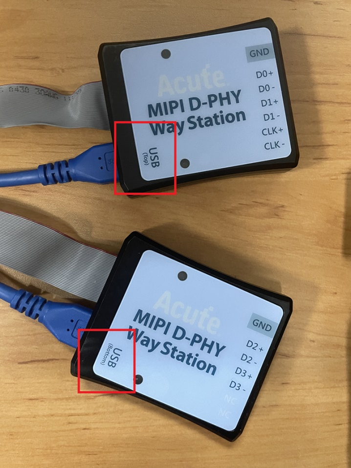
Q7. How to connect the probes with the DUT?
- A: Weld the DUT:
- FPC End-tip:
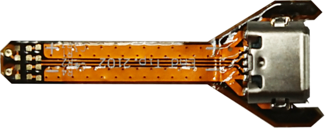
- (Do not bend excessively to avoid internal open circuit of the FPC) The welding line MUST be < 5mm. On the DUT, you are highly recommended to weld a 100Ω resistor and connect it to the End tip with a 3cm line.
Step 1: Connect the SMPM-SMPM cable to the End-tip first.
Step 2: Weld the End-tip to the DUT after Step 1.
※ End-tip R1/R2 resistor is 1kΩ/0402 which can be replaced if it breaks.
- Solder R1, R2 to the corresponding resistor in the table, and C1 to the corresponding capacitor, and follow the PCB End-tip steps to complete the connection with the DUT
| CLK | FPC End Tip |
|---|---|
| < 800Mbps | |
| >= 800Mbps Standard |
User tip: You can design your own end-tip with a 1 kΩ resistor to connect to the DUT, then use a 50 Ω impedance PCB trace for the SMPM connector.
Breakout: You can design your own EV board with an SMPM connector to connect the Acute MIPI D-PHY analyzer, breaking out the D-PHY host and device on the PCB as shown below. R1/R2/R3 must be placed as close together as possible, using 50 Ω impedance.

Q8. Use a multimeter to check for a short circuit.
Make the connections as shown below.
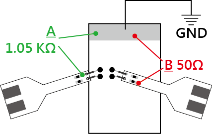
Check point A: End-tip resistor front to ground, green line ==> no sound from a multimeter.
Check point B: End-tip resistor back to ground, red line ==> sound from a multimeter, any short circuit?
A sound from a multimeter at point B is normal because it is low impedance of 50Ω at the resistor back. So, there is no short circuit if the resistor front of 1.05 KΩ without any sound.
Q9. How to connect the ground?
Two ways to connect the ground: End-tip or Way Station. (Connecting the end-tip ground to the DUT ground gives better signal quality. You can use the Way Station ground instead for convenience, at the cost of lower signal quality.)
- Since the device and the system under test still need to share the same ground, you can first connect the GND Port on the Way Station to the GND of the object under test. Both Way Stations must be connected.

Unless the signal quality is too poor or the interference is too large, and many errors occur after analysis, the best effect can be achieved by connecting each End-tip to ground, as shown in the red circle in the figure below.
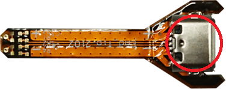
- (Please solder the GND of the DUT directly to the connector at the end of the End-tip.) Q10. Is DSI/CSI Data Type or Data trigger supported?
A: Yes, Data Type, DCS Command and Data trigger are supported by BF7264.
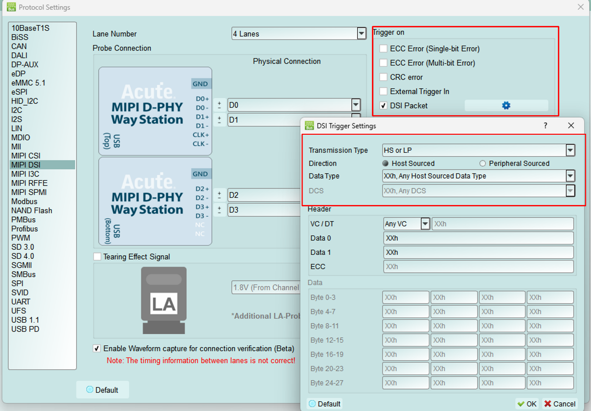
Q11. Is it possible to set up an HS, LP, or DCS command as a start condition and then capture data within a specified time range?
A: Yes. After setting up the HS, LP, or DCS command as the start condition in the trigger settings, move to
Configuration and change the operation mode to Protocol Monitor mode, then you can specify the required capture time range.

Appendix 1: Tearing Effect Signal
Tearing Effect (TE) pin signal detect.

(Image Source: https://blog.csdn.net/kris_fei/article/details/77775553)
The TE pin is used by the display to inform the Host. At present, the data cannot be updated during the screen graphics drawing. If the screen is updated when TE = High, a horizontal break line will appear on the image. This function can clearly identify the failure to follow TE state operation instructions, reduce the time required to guess the problem and set up an oscilloscope to verify
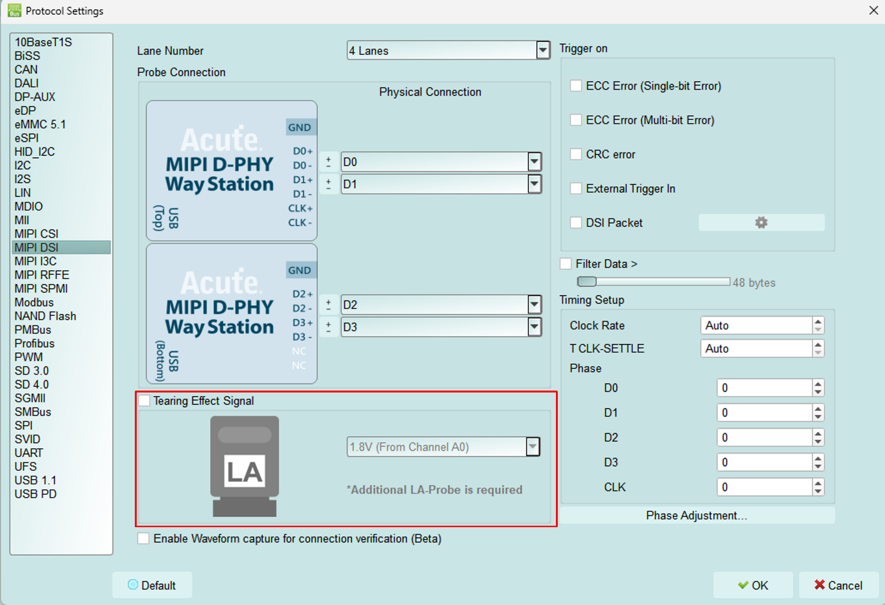
The TE function requires an additional LA Probe set. The default input is channel 0, which supports two operating voltages, 3.3V and 1.8V. The setting is as follows:
Result:
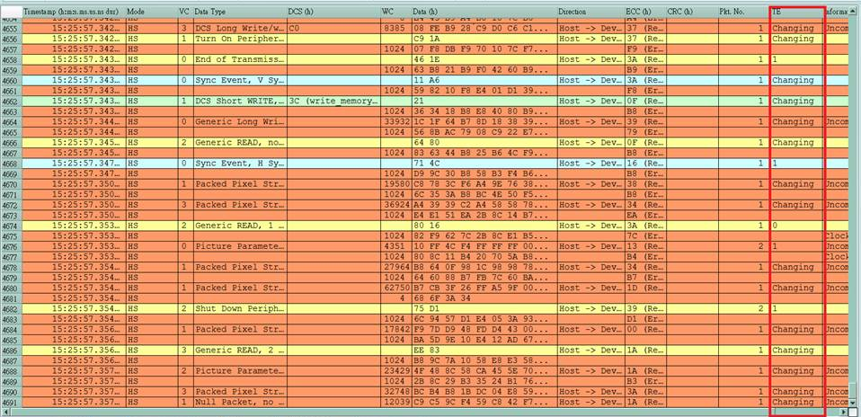
Appendix 2: Video Display Dialog
Click Window-> Video Display Dialog to open the video display dialog,


Please set the DSI, CSI format, resolution, RGB order, and then press Process to restore the image. Partial analysis function is also provided. If the DUT only updates part of the screen, this option can be checked to display part of the updated content.
Example:

It also provides a linkage function with the data in the main report area, making it easy to find the location of the image data.
Save Image can output the restored image as .jpg / .bmp / .bin.
If DSI transmits image data in Video mode, there is also a Porch function that can count the format sent by each image. Ex: VSA, VBP, VFP, HBP, HFP, image.
If you choose TYPE-DSC restore, please select DSC Command mode use DCS Command.
If you use V-Sync / H-Sync format, please select DSC Video mode. Specify the PPS file (format .txt) to restore. PPS will also be replaced with the Picture Parameter Set (0A) command.
Appendix 3: Unable to Measure / Only Measure the LP Mode Signal / Too Many Errors Solution:
Step 1: Check whether the two USB connections between the probe and the BusFinder are seated properly.
- Unplug the USB of the host device and that of the WayStation, then plug it back in. Step 2: Please check if the Lane/CLK wire is within 5mm of the regulation, and make sure that each end-tip is connected to Gnd.
Step 3: Turn on the waveform viewing function and send out the HS signal to make sure the connection is correct.
Step 3.1: Enable Waveform capture for connection verification (Beta)
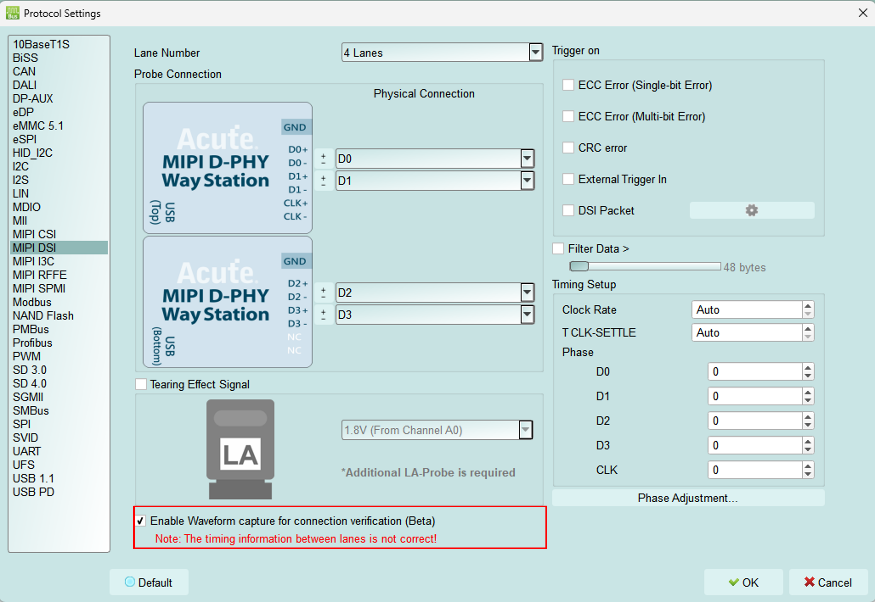
Step 3.2: Switch the “Configuration Settings”. Use the “Protocol Monitor mode” and limit the memory to 1-3%. If the problem is solved, switch back to “Protocol Analyzer mode”

Step 3.3: Show Waveforms

Step 3.4: Capture the waveform
Step 3.5: Analyze whether there is an HS signal. Before the red arrow is the LP signal, and after the waveform is the HS signal. (At the position of the red arrow, the LP signal of P/N becomes low, and HS starts to have signal.) Please find a similar position and zoom in to view the waveform. If the collection is repeated many times, the intersection of LP and HS still cannot be found. The Lane/CLK may be disconnected. Please refer to the FAQ 7.


Step 3.6: Confirm whether the CLK Duty is 50:50, and check the width of each edge of Lane 0-3 behind HS SYNC. Normally, it is the width of half a CLK cycle or multiple. If it is abnormal, please check whether the bonding wire meets the requirements again. If it meets the regulations, there will still be noise or CLK Duty problems, please continue to shorten the wire length, and need to use the GND closest to the signal.

Ex: Bad CLK duty, 65:35, 1.4ns:0.8ns
Ex: The width of high pulse in Lane 0, Lane 3 is not the width of half CLK cycle
Half CLK cycle = (1.4 + 0.8) / 2 = 1.1 (ns)
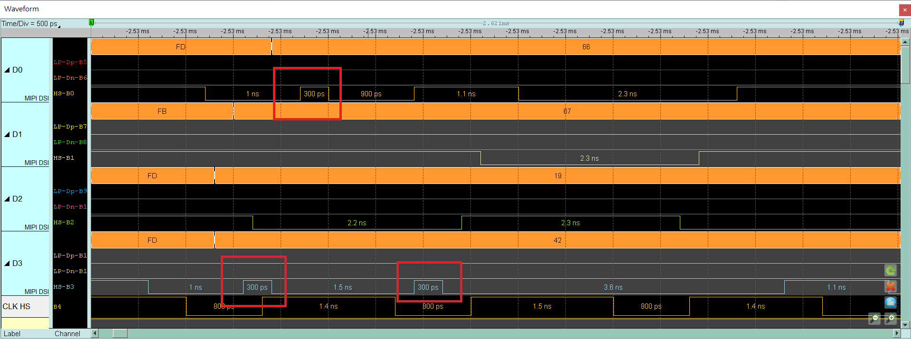
Under normal conditions, the width is about 1.1ns or multiple.
Appendix 4: List of restored images
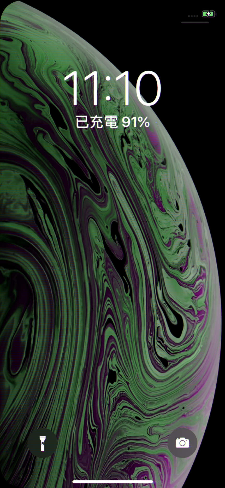
- Video mode - 1125 * 2436
2. CMD mode – 1125 * 2436